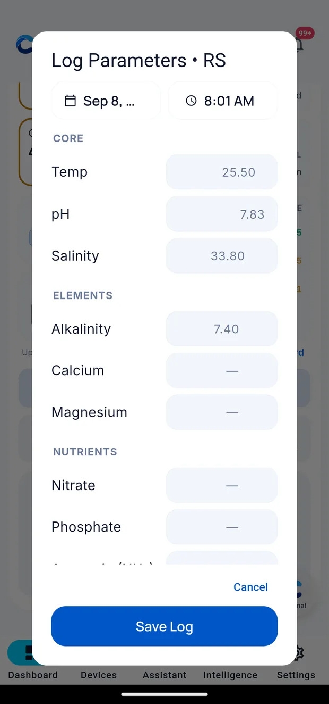

Setting up Cora Mobile
Setup takes around ten minutes. At the end you will have an account, a configured tank, and a dashboard showing live readings.
Install the app
Search for Cora on the App Store or Google Play and install it. On your home screen the icon is labelled Cora — that is Cora Mobile.
Looking around first
Before creating an account you can choose Explore a demo reef — a sample tank with realistic data, laid out exactly like a real one. Nothing in it is connected to anything, and nothing is saved.
Use it to see how dashboards, widgets and readings work before committing.
Create your account
Open the app and choose Create account. You can sign up with an email address, or with Apple or Google if you would rather not manage another password.
You will be asked to verify your email. Cora sends a link — open it on the device and come back to the app. Check spam if it does not arrive within a minute.
Add your first tank
A tank in Cora is a body of water you want to track. Most people have one. If you run a frag system or a quarantine, those are separate tanks.
The setup wizard covers the following. All of it can be changed later from your tank profile:
- Name — whatever you call it out loud. "Display", "Frag", "QT".
- Type — mixed reef, SPS-dominant, softie, fish-only.
- Dimensions and volume — actual water volume including the sump. This is what dosing maths uses, so it is worth getting roughly right.
That is the whole wizard. Everything else — livestock, equipment, dosing, targets, lighting, flow — is filled in afterwards from your tank profile, at your own pace.
Connect your equipment
With a tank in place, go to the Devices tab and add your gear. Cora works with equipment you already own — see Connecting your gear for what is supported and what each one needs.
You can skip this and come back. A tank with no devices still works; you just log readings by hand.
Log your first readings
Some parameters are only available from a test kit. Scroll to the bottom of the dashboard and tap Log Parameters.

Each reading is stored with its source and timestamp. This is what allows Cora to report when a probe and a test kit disagree.
What good looks like
You are set up when the Dashboard shows your tank name at the top, at least a few widgets with numbers in them, and a Reef Buddy card once the first briefing runs overnight.
Next: The five tabs.
Written for Cora Max 0.28.33 and Cora Mobile 0.5.54.
Still stuck? Email cora@coraiq.tech and we'll help.